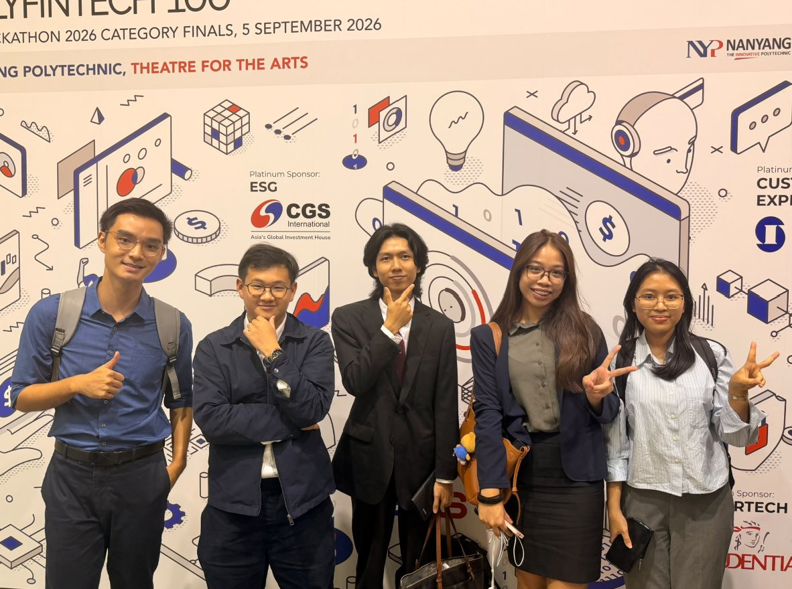
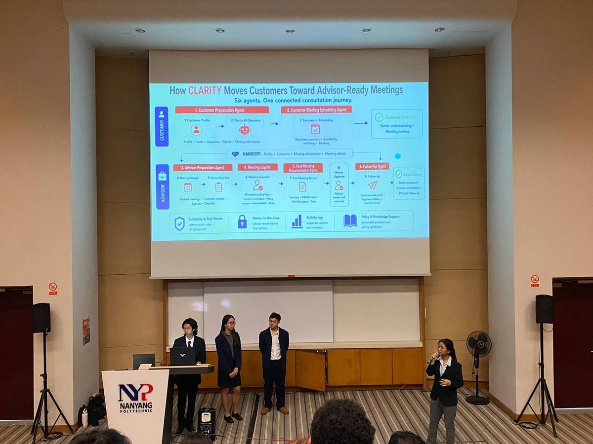
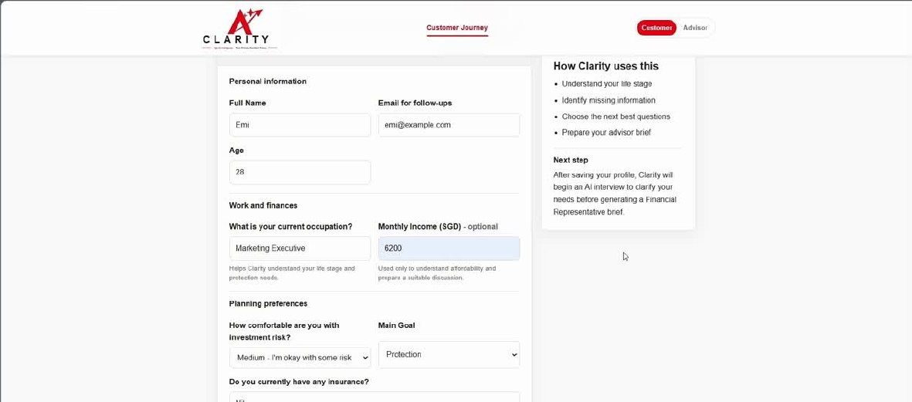
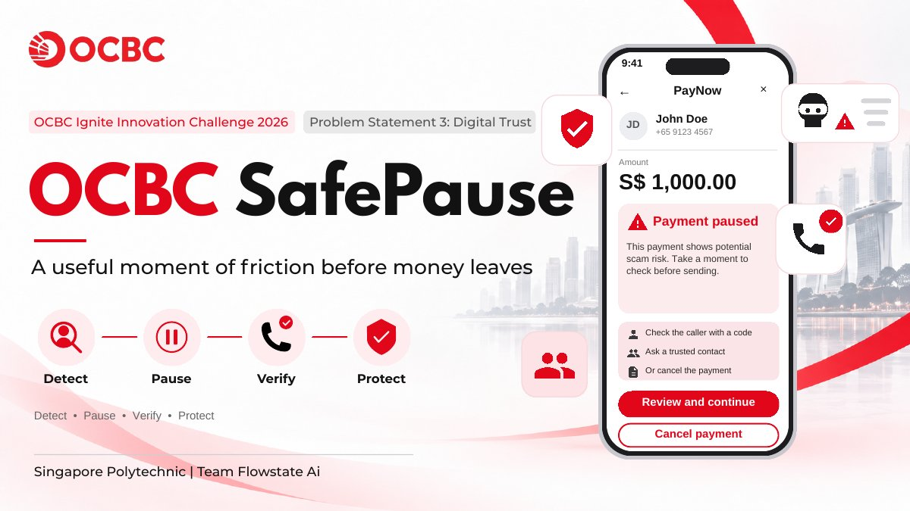
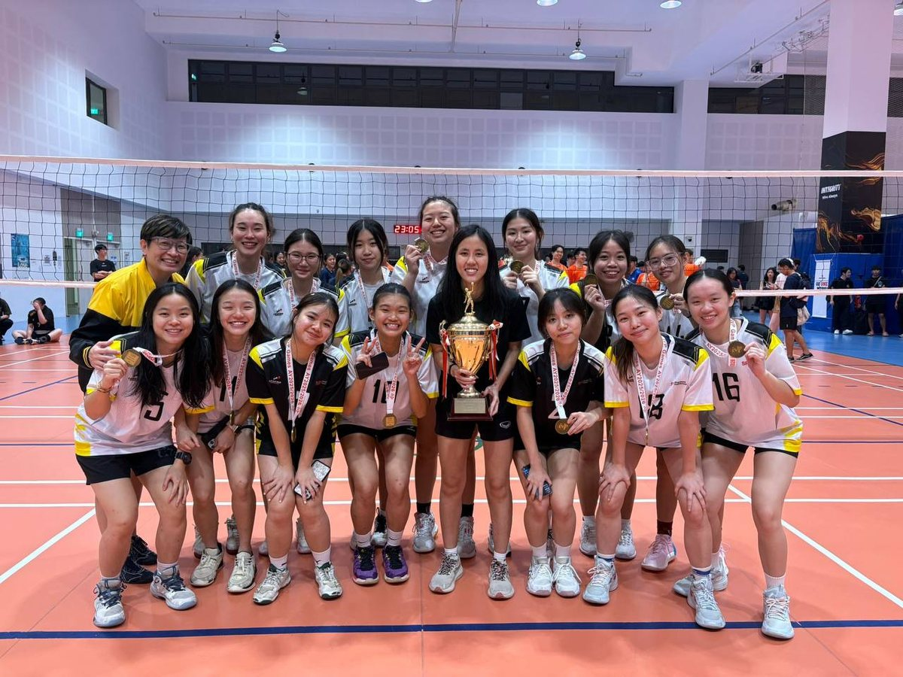
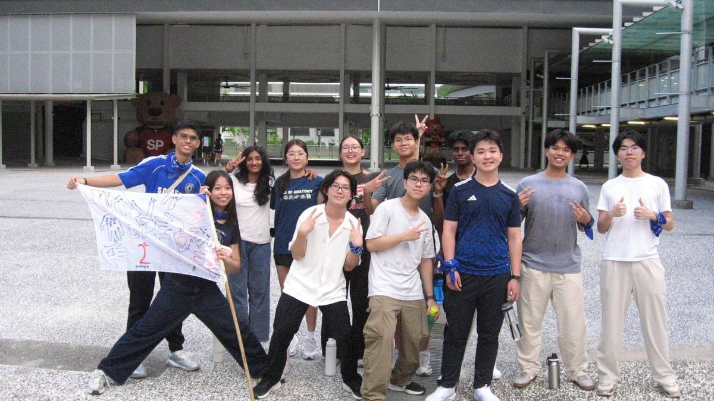
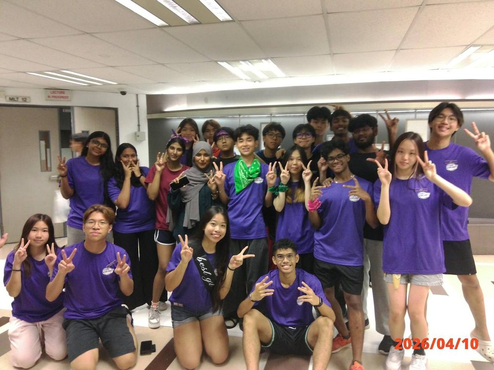

EDUCATION
Singapore Polytechnic
Diploma in Applied AI & Analytics
- Study period
- 2025 – 2028 (Expected)
- Current CGPA
- 3.70 / 4.00
HELLO, I’M NOELLA
I’m Noella, a Year 2 Applied AI & Analytics student at Singapore Polytechnic with a passion for transforming complex datasets into clear insights and building reliable data solutions. I’m especially interested in Data Analytics, Data Engineering, and Business Intelligence.
01 / ABOUT
I’m currently pursuing a Diploma in Applied AI & Analytics at Singapore Polytechnic, where I’ve built hands-on experience in Python, data analytics, machine learning, database management, and data engineering.
What interests me most about data is the process of turning information into something useful — whether that’s spotting a pattern, building a visualisation that makes it obvious, or designing the pipeline that makes the analysis possible in the first place.
Outside the classroom, I like taking on new challenges through hackathons, student leadership, and competitive volleyball. They’ve taught me a lot about teamwork, adapting quickly, and explaining ideas clearly.
I like asking why the numbers look the way they do.
Clean, well-checked data comes before any conclusion.
Comfortable working with technical and non-technical teammates.
Most motivated when the work answers a real question.
Noella Bunag
Applied AI & Analytics student
EDUCATION
Diploma in Applied AI & Analytics
ACADEMIC HIGHLIGHTS
Placed in the top 5% of the cohort for each of these modules:
02 / TOOLKIT
Technologies and tools I’ve worked with through academic projects, technical assignments, and hands-on learning.
03 / PROJECTS
A collection of projects exploring data analytics, engineering, visualisation, and machine learning.

DATA ENGINEERING
Designed and implemented a data warehousing solution to transform library transaction records into structured datasets for business analysis and operational decision-making. Singapore Polytechnic group project.
12,343completed loans loaded through ETL into a star schema, then analysed with six SQL queries

DATA ANALYTICS · AUTOMATION
Analysed Singapore’s graduate employment outcomes, salary trends, and working hours using Python, data visualisation, and automated reporting workflows.
+27.3%graduate salaries alongside a 7.08% fall in weekly working hours (2013–2022)

BUSINESS INTELLIGENCE · DATA STORYTELLING
Built a Power BI data story for a fictional games company, using survey data to recommend where to pilot new content for a location-based mobile game. Team project, presented live.
200survey responses analysed against three criteria to recommend one pilot location

MACHINE LEARNING · DATA ANALYTICS
Explored how machine learning and statistical modelling can support customer segmentation and resource consumption forecasting. Individual project.
3.56%test MAPE for electricity forecasting, plus 5 customer segments identified

DATA ANALYTICS
Analysed a large collection of job postings to investigate salary patterns across different roles and experience levels. Individual project.
123,849job postings combined from 5 files; salaries rose at every experience level
No projects in this category yet.
Smaller coursework projects in dashboards, deep learning and algorithms.
BUSINESS INTELLIGENCE
Contributed to two interactive Power BI dashboards that combine five Singapore government datasets, framed around UN SDG 4 and SDG 8.
DEEP LEARNING
Built a CNN to classify handwritten letters (95.64% test accuracy on EMNIST) and a bidirectional LSTM for sentiment analysis of English and Malay pizza reviews (88.89% test accuracy).
REINFORCEMENT LEARNING · GENERATIVE AI
Trained a Deep Q-Network to balance a pendulum under four different gravity settings, with systematic hyperparameter comparisons. Also explored image generation with GAN and VAE models.
ALGORITHMS
Compared the performance of different sorting algorithms to understand how they behave as input size grows.
Also built: a DNA mutation simulator and a full-stack wellness application.
04 / HACKATHONS & INNOVATION
Exploring real-world challenges through collaboration, innovation, and hands-on problem-solving.
POLYFINTECH100 HACKATHON 2026PRUDENTIAL INSURTECH CHALLENGE
Team Aspire · Hackathon prototype
Category Finalist · top 10 of about 70 teams
Collaborated with Team Aspire to conceptualise and prototype CLARITY, an agentic AI solution designed to help customers and financial representatives prepare for their first consultation. Six specialised agents support the journey before, during and after the meeting.
HIGHLIGHTS



SIX AGENTS, ONE CONSULTATION JOURNEY
Designed so that AI assists and the advisor decides. A hackathon prototype — not a commercially deployed product.
OCBC IGNITE INNOVATION CHALLENGE 2026DIGITAL TRUST · SCAM PREVENTION
Team Flowstate AI · Hackathon concept
Developed a proposed digital banking safety solution designed to help users identify suspicious transactions and make more informed decisions before transferring money.
HOW IT WORKS

SIX PROPOSED FEATURES
A student hackathon concept — not an official OCBC banking product.
05 / EXPERIENCE
Part-time work that has shaped how I communicate, stay calm under pressure, and take responsibility.
JAN 2025 – PRESENT · PART-TIME
Mount Faber Leisure Group
SEP 2022 – OCT 2023
Burger King
My first job — where I learned to work quickly and reliably as part of a team in a busy customer-facing environment.
06 / LEADERSHIP
Growing through teamwork, responsibility, and experiences beyond academics.
2026 – PRESENT
Vice-Captain & Treasurer
As Treasurer, I look after part of the team’s financial administration:
Singapore Polytechnic
Singapore Polytechnic · recognised as Best Group Leader
Took part in school outreach, publicity, and student engagement activities.
CCA Gold AwardAwarded with 93 CCA points



07 / CONTACT
I’m always interested in learning opportunities, meaningful collaborations, and conversations about data and technology.
Whether it’s an internship opportunity or a conversation about a project, I’d be happy to connect.